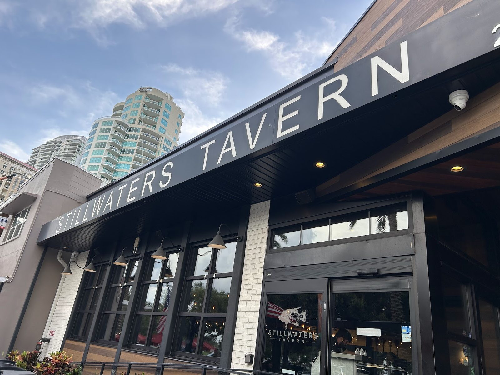
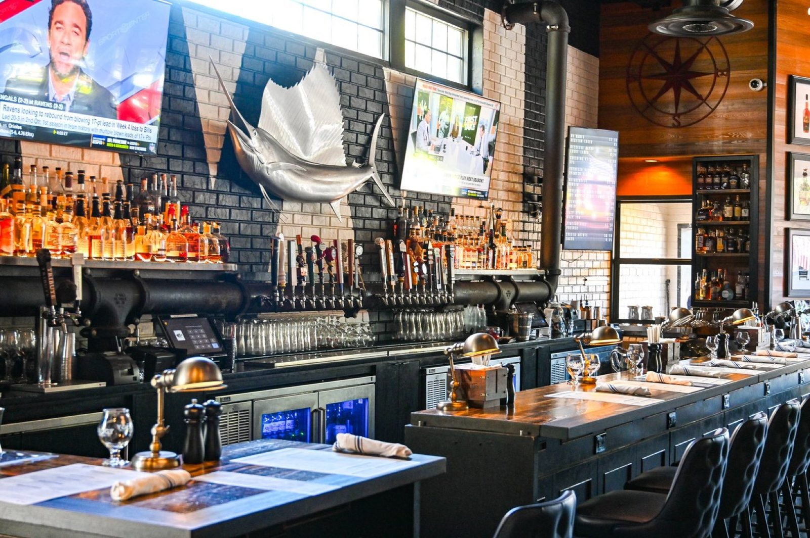
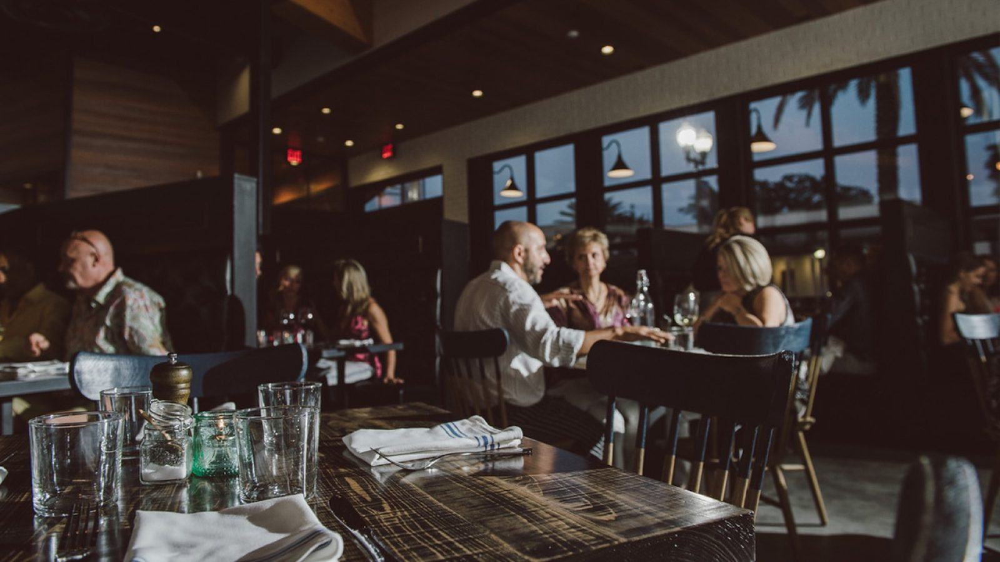
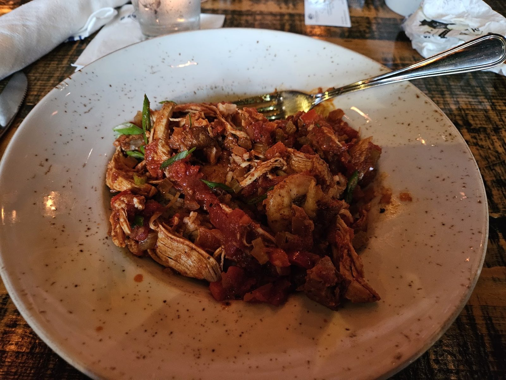
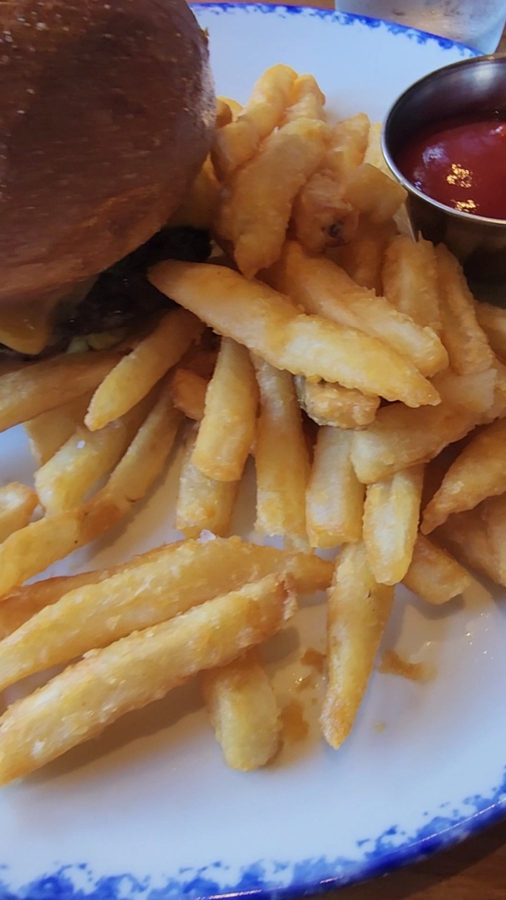

F.G.T. Stack
Fried green tomatoes, pimento cheese, smoked tomato jam and bacon.


Scratch kitchen and bar · St. Petersburg, FL
Sausage board, fish 'N chips and 20 regional beers on tap.
What to order
Three plates from the kitchen.
Fried green tomatoes, pimento cheese, smoked tomato jam and bacon.
Cod with southern slaw and malt vinegar aioli, made here on Beach Drive.

Tavern burger, Cuban, Nashville hot chicken and more, with fries or southern slaw.






4.53729 Google reviews
When visiting Saint Petersburg this week, we stayed near the downtown district and stumbled upon Stillwater’s Tavern. Great decision! We sat at the bar, had a couple of drinks and ordered the sausage board. 4 sausages made in-house with a delicious mustard pairing for each sausage - Polish kielbasa, chorizo sausage, jalapeño sausage, and one other. It was a great experience with good service and delicious food.
The menu is super friendly and practical. The title of each dish gives you a pretty good visual of what to expect, and it did not disappoint! I ordered the salad, and it was perfect, fresh and well-balanced. I also loved that my daughter had the option of a fruit bowl filled with watermelon and strawberries. She’s a picky eater, and I always do my best to give her healthy options, so that was perfect for her.
Our friends suggested dinner here before the movies and it was a good suggestion. They have a choice of inside or outside dining and we chose inside due to the humidity. Our server (Brandon?) was efficient and polite. We had a small mistake on our food and he took care of it QUICKLY! We were so pleasantly surprised by that. Food overall was very good but not amazing. Good cocktail variety.

Our story
A scratch kitchen and bar on Beach Drive, founded in 2014. Sausages made in-house, dishes built from local farmers and fishers.
Wine and cocktails on tap too, and a long bar under a mounted sailfish. Seats inside and out.
Visit
224 Beach Dr NE, St. Petersburg, FL 33701
Reservations, takeout and delivery available. Happy hour every day from open until 7 PM.